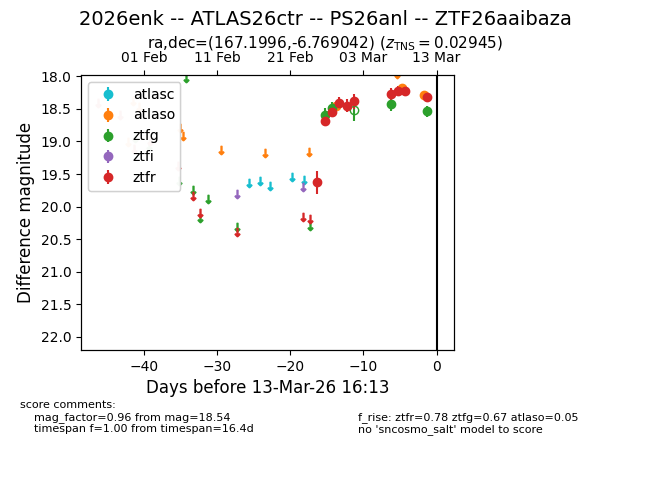
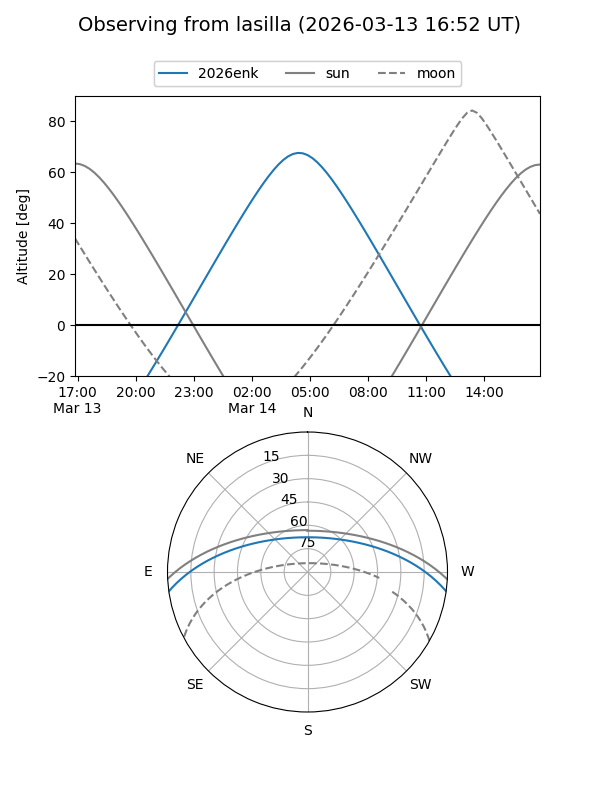
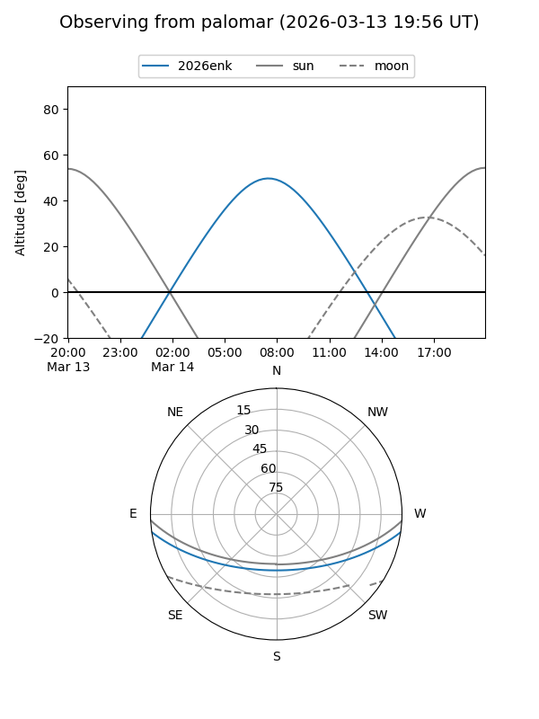
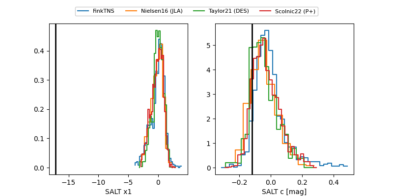

2026enk
Target 2026enk at 2026-03-13 16:15
Aliases and brokers:
FINK: link
Lasair: link
ALeRCE: link
TNS: link
YSE: link
alt names
ZTF26aaibaza (ztf,fink_ztf)
2026enk (tns,yse)
PS26anl (panstarrs)
ATLAS26ctr (atlas)
Coordinates:
equatorial (ra, dec) = 167.1996,-6.76904
equatorial (HMS+DMS) = 11:08:47.90,-06:46:08.55
galactic (l, b) = (262.9641,+47.97735)
Flags:
Photometry:
last atlaso=18.28, ztfg=18.54, ztfr=18.31
4 atlaso, 4 ztfg, 10 ztfr detections
Lightcurve

Visibility


Additional plots
